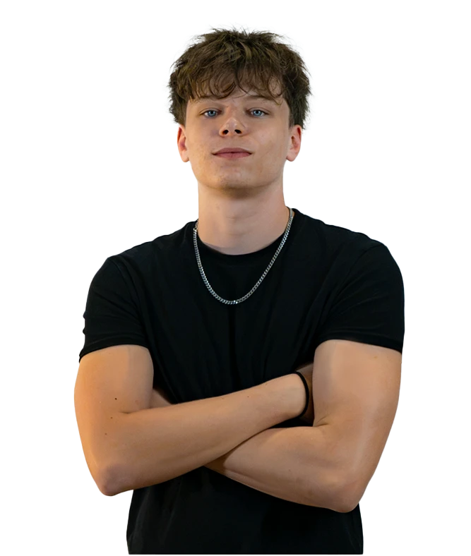

École obligatoire
MézièresCollège du Raffort
LT Design

De l'école obligatoire à Mézières au CFC de médiamaticien au CPNV de Sainte-Croix.
Collège du Raffort
Lausanne · 1 semaine
État de Vaud · 1 semaine
État de Vaud · 1 semaine
Sainte-Croix · CFC de médiamaticien
LT Design · graphiste indépendant, en parallèle des cours
Contact
Si ces projets vous ont plu ou que vous avez une question, la boîte mail est ouverte, je réponds sous 48 h.